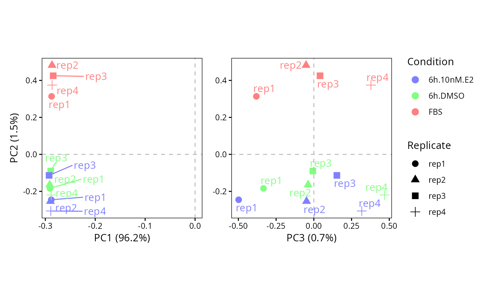

Plot combined scatter of the PCs 1-2,2-3 from an object generated by perform.PCA.
# S3 method for class 'PC.scatter.123'
plot(
DEprot.PCA.object,
color.column = "column.id",
shape.column = NULL,
label.column = NULL,
dot.colors = NULL,
title = NULL,
plot.zero.line.y.12 = TRUE,
plot.zero.line.x.12 = TRUE,
plot.zero.line.y.23 = TRUE,
plot.zero.line.x.23 = TRUE
)An object of class DEprot.PCA.object, as generated by perform.PCA.
String indicating the name of the column in the metadata to use as factor for the dot colors. Default: "column.id" (each sample a color).
String indicating the name of the column in the metadata to use as factor for the dot shapes. Default: NULL (all dots).
String indicating the name of the column in the metadata to use as label of the dots. Default: NULL (no labeling).
Color-vector indicating the colors to use for the points in the plot. If NULL (default) or the number of colors is lower than the required, automatic colors will be assign using the rainbow function. Default: NULL.
String indicating a title to add to the plot (markdown syntax supported). Default: NULL (no)
Logical value to indicate whether to plot two gray dashed lines in correspondence of y=0 in the PC1-vs-PC2 plot. Default: TRUE.
Logical value to indicate whether to plot two gray dashed lines in correspondence of x=0 in the PC1-vs-PC2 plot. Default: TRUE.
Logical value to indicate whether to plot two gray dashed lines in correspondence of y=0 in the PC2-vs-PC3 plot. Default: TRUE.
Logical value to indicate whether to plot two gray dashed lines in correspondence of x=0 in the PC2-vs-PC3 plot. Default: TRUE.
A patchwork object result of a combination of two ggplot objects.
# Perform Principal Component Analyses (PCA)
pca <- perform.PCA(DEprot.object = DEprot::test.toolbox$dpo.imp)
# Visualize PCA
plot.PC.scatter.123(DEprot.PCA.object = pca,
color.column = "condition",
shape.column = "replicate",
label.column = "replicate")
